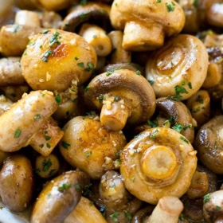

← All recipes
Garlic Mushrooms

Servings: Serves 4 · Cook: 7 minutes
Ingredients
- 1 pound mushrooms I used button mushrooms
- 4 tablespoons butter
- 1 tablespoon minced garlic
- 1 sprig fresh thyme or 1/4 tsp dried thyme leaves
- 1 tablespoon chopped fresh parsley
- salt and pepper to taste
Directions
- Melt the butter in a large pan over medium high heat.
- Add the mushrooms and thyme, then season generously with salt and pepper.
- Cook, stirring occasionally, until mushrooms are golden brown and tender, about 7 minutes.
- Stir in garlic, cook for an additional 30 seconds.
- Sprinkle with parsley and serve.
Notes
The garlic flavor is prominent in this recipe. If you’re not in love with garlic, reduce the amount to 2 teaspoons.
I just throw a whole sprig of thyme leaves into this dish and the leaves will drop off the stem during the cooking process. Just be sure to remove the stem before you serve!
Look for mushrooms that are roughly the same size so that they’ll all cook in the same amount of time.
Original source: dinneratthezoo.com